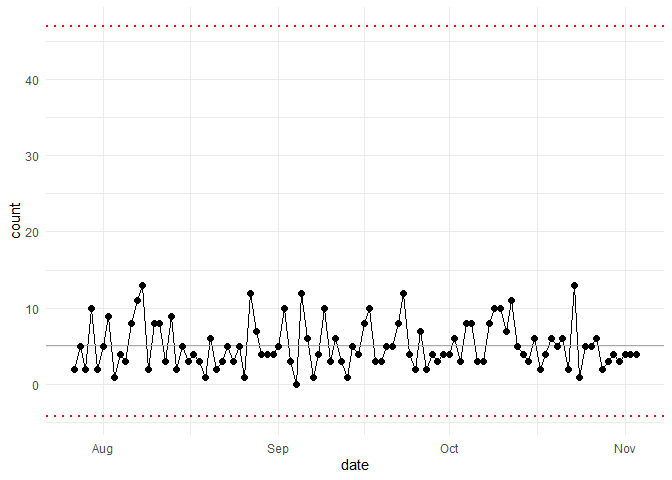

The Machine Learning and AI Modeling Companion to healthyR
To view the full wiki, click here: Full healthyR.ai Wiki
healthyR.ai is a comprehensive R package designed to streamline machine learning and AI workflows for healthcare data analysis. It provides an intuitive, consistent verb-based framework that simplifies data exploration, transformation, and modeling—taking the guesswork out of healthcare analytics.
✨ Key Features
🤖 AutoML Functions
Automated machine learning with hyperparameter tuning for multiple algorithms: - Tree-based models: C5.0, Cubist, Random Forest (Ranger), XGBoost - Support Vector Machines: Polynomial and RBF kernels - Linear models: GLMnet (elastic net regression) - Instance-based: K-Nearest Neighbors (KNN) - MARS: Multivariate Adaptive Regression Splines (Earth)
📊 Clustering & Dimensionality Reduction
- K-Means AutoML: Automatic optimal cluster detection with scree plots and elbow methods
- UMAP: Uniform Manifold Approximation and Projection for visualization
- PCA: Principal Component Analysis with loadings plots
📦 Installation
Install the released version from CRAN:
install.packages("healthyR.ai")Or get the development version from GitHub:
# install.packages("devtools")
devtools::install_github("spsanderson/healthyR.ai")🚀 Quick Start
Control Charts for Healthcare Monitoring
library(healthyR.ai)
library(ggplot2)
# Create sample adverse events data
data_tbl <- tibble::tibble(
day = sample(c("Monday", "Tuesday", "Wednesday", "Thursday", "Friday"), 100, TRUE),
person = sample(c("Tom", "Jane", "Alex"), 100, TRUE),
count = rbinom(100, 20, ifelse(day == "Friday", .5, .2)),
date = Sys.Date() - sample.int(100)
)
# Generate control chart
my_chart <- hai_control_chart(data_tbl, count, date)
my_chart +
ylab("Number of Adverse Events") +
scale_x_date(name = "Week of...", date_breaks = "week") +
theme(axis.text.x = element_text(angle = -90, vjust = 0.5, hjust = 1))
AutoML with K-Nearest Neighbors
library(healthyR.ai)
library(recipes)
library(dplyr)
# Prepare your data
data_split <- rsample::initial_split(mtcars, prop = 0.8)
train_data <- rsample::training(data_split)
test_data <- rsample::testing(data_split)
# Create a recipe
rec_obj <- recipes::recipe(mpg ~ ., data = train_data)
# Run AutoML KNN
knn_results <- hai_auto_knn(
.data = train_data,
.rec_obj = rec_obj,
.best_metric = "rmse",
.model_type = "regression"
)
# Access the best model
best_model <- knn_results$model_info %>%
dplyr::filter(model_spec == knn_results$best_model_spec) %>%
dplyr::pull(model)K-Means Clustering with AutoML
library(healthyR.ai)
library(dplyr)
# Prepare data
data_tbl <- healthyR.data::healthyR_data %>%
dplyr::select(length_of_stay, age) %>%
dplyr::filter(length_of_stay < 20)
# Auto K-Means - finds optimal clusters
kmeans_obj <- hai_kmeans_automl(
.data = data_tbl,
.max_clusters = 15
)
# Visualize the scree plot
hai_kmeans_scree_plot(kmeans_obj)
# Get user-item tibble for analysis
hai_kmeans_user_item_tbl(kmeans_obj)Data Preprocessing with Custom Steps
library(healthyR.ai)
library(recipes)
# Create a recipe with custom preprocessing steps
rec <- recipe(mpg ~ ., data = mtcars) %>%
step_hai_scale_zscore(all_numeric_predictors()) %>%
step_hai_fourier(disp, period = 365, order = 1) %>%
step_hai_hyperbolic(hp, wt)
# Prep and bake
prepped_rec <- prep(rec)
transformed_data <- bake(prepped_rec, new_data = NULL)📚 Documentation
- Website: https://www.spsanderson.com/healthyR.ai/
- Function Reference: Browse all available functions and their documentation
- Vignettes: In-depth tutorials and use cases
🎯 Use Cases
healthyR.ai is designed for healthcare data analysts and data scientists who need to:
- Predict length of stay for hospital patients
- Forecast readmission rates with multiple algorithms
- Monitor quality metrics using control charts
- Identify patient cohorts through clustering
- Preprocess and transform healthcare data for modeling
- Automate hyperparameter tuning across multiple model types
- Visualize distributions and identify outliers
🤝 Contributing
We welcome contributions! If you’d like to contribute to healthyR.ai:
- Fork the repository
- Create a feature branch (
git checkout -b feature/amazing-feature) - Commit your changes (
git commit -m 'Add amazing feature') - Push to the branch (
git push origin feature/amazing-feature) - Open a Pull Request
🐛 Issues & Feature Requests
Found a bug or have a feature request? Please file an issue at: https://github.com/spsanderson/healthyR.ai/issues
If you find this package useful, please leave a star on GitHub! ⭐
👨💻 Author
Steven P. Sanderson II, MPH - Website: https://www.spsanderson.com/ - GitHub: @spsanderson - ORCID: 0009-0006-7661-8247
🙏 Acknowledgments
healthyR.ai builds upon the excellent work of the tidymodels ecosystem and integrates seamlessly with: - recipes for data preprocessing - parsnip for unified model interfaces - tune for hyperparameter optimization - workflows for streamlined modeling pipelines - yardstick for model evaluation
Special thanks to all contributors and the R community for their support!